1. Objetivos
Este laboratório tem os seguintes objetivos:
2. Roteiro
Neste laboratório, foi utilizado o roteiro disponibilizado no próprio arquivo do Jupyter Notebook. O arquivo foi editado para atender à proposta e a versão final pode ser visualizada neste link.
3. Desenvolvimento
Inicialmente, foram gerados alguns tons com NoteSequences para criar um arquivo MIDI. O primeiro teste criou uma pequena música conhecida como "Twinkle twinkle", cujo diagrama pitch do MIDI pode ser visto na imagem abaixo, seguido do player do som gerado.
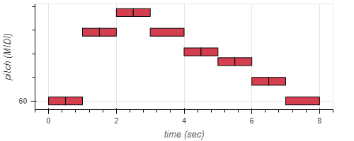
No segundo teste, foi criada a música "Asa Branca", que inicialmente possuía um pequeno erro de tempo em algumas notas. A versão corrigida pode ser vista a seguir.
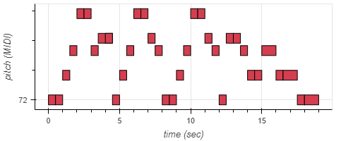
Para fechar os testes iniciais, foi gerado uma pequena sequência mudança de instrumento para bateria.
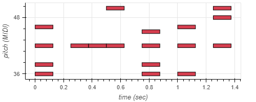
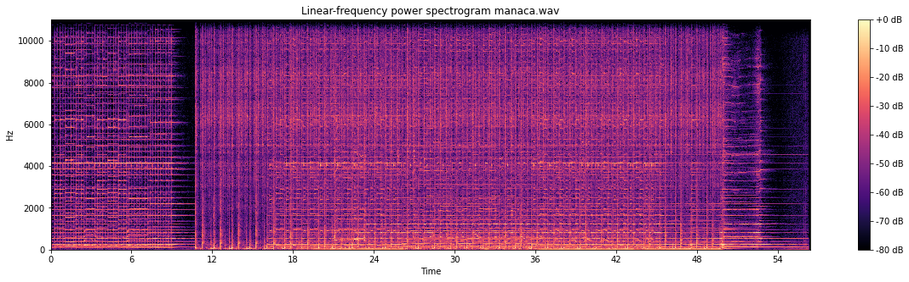
Foi executada a conversão para MP3 do áudio original e do áudio escolhido, inicialmente usando o codec "libmp3lame" com o parâmetro "-b:a" para o áudio original e "-q:a" para o áudio escolhido. Neste primeiro momento, foi usada a taxa de 128kbps. Abaixo podem-se verificar os áudios convertidos bem como seus espectrogramas.
abba128.mp3:
manaca128.mp3:
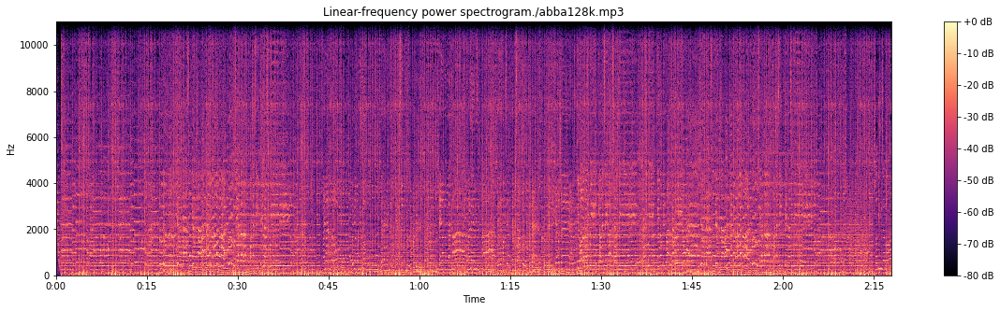
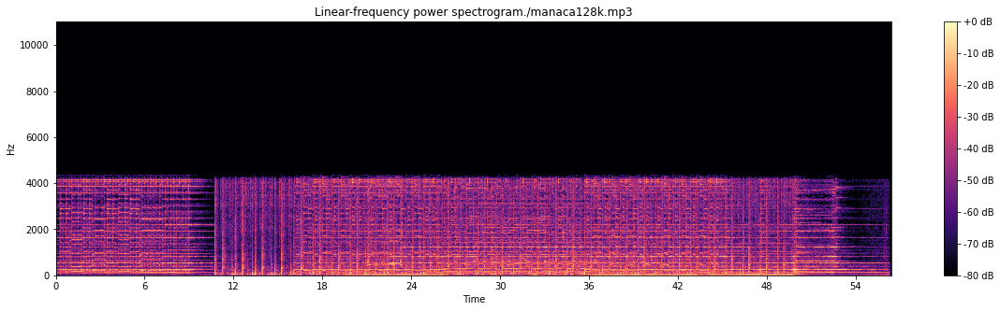
Usando a taxa de 64kbps, foi realizada a mesma conversão citada anteriormente. Os áudios e espectrogramas podem ser vistos abaixo.
abba64.mp3:
manaca64.mp3:
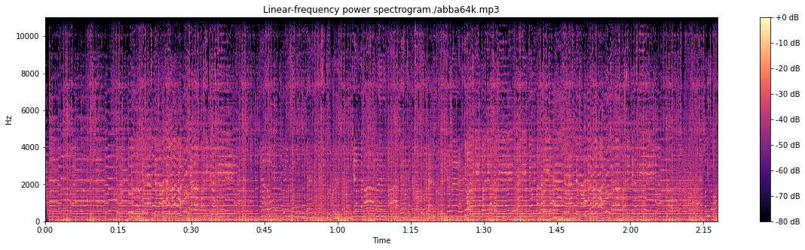
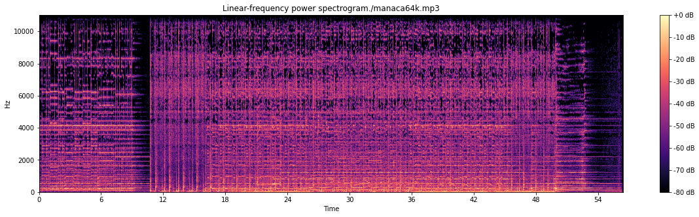
Usando a taxa de 32, 16 e 8kbps, foram realizadas as mesmas conversões citadas anteriormente. Desta vez, o foco foi o áudio escolhido pelo grupo. Os áudios e espectrogramas podem ser vistos abaixo.
manaca32.mp3:
manaca16.mp3:
manaca8.mp3:
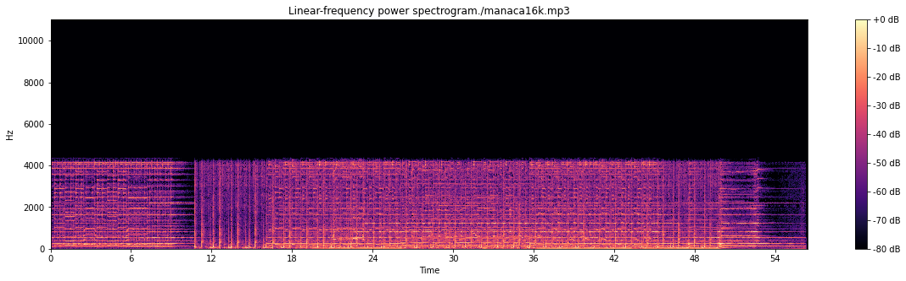
Um teste de conversão de codecs foi realizado convertendo os arquivos de MP3 para OGG. Os áudios obtidos podem ser vistos abaixo. A taxa usada permaneceu em 128kbps.
abba128.ogg:
manaca128.ogg:
Um teste de alteração de velocidade foi realizado, gerando um áudio com tempo de duração menor, resultando em uma aparência de velocidade de reprodução multiplicada por 2.
abba128k_v2.mp3:
manaca128k_v2.mp3:
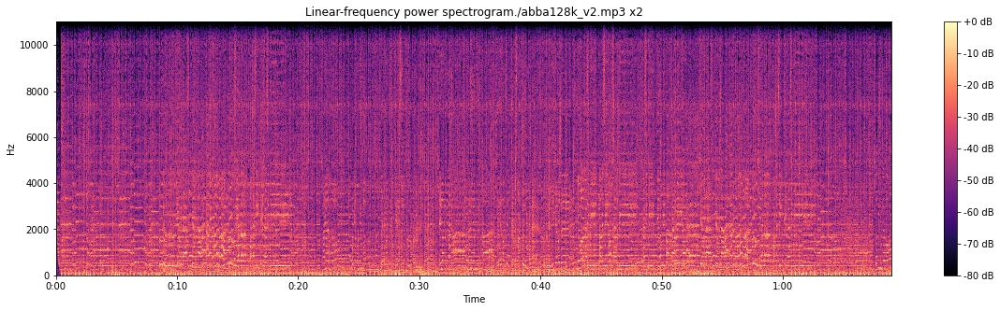
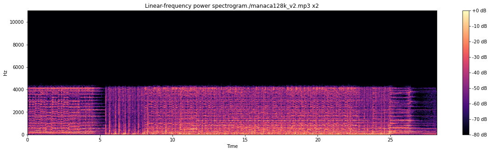
Foi feito também um teste de alteração de velocidade resultando em uma aparência de velocidade de reprodução multiplicada por 0.5 no áudio escolhido. O resultado pode ser visto abaixo.
manaca128k_v3.mp3:
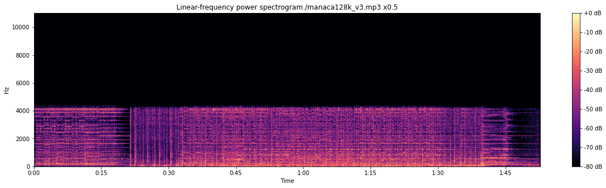
4. Conclusões
Neste laboratório o objetivo foi analisar sinais de áudio após conversões realizadas com ffmpg, especialmente seu resultado final e espectrograma. Foi muito interessante utilizar estas ferramentas, mostramdo-se um método muito eficiente de se trabalhar com sinais de áudio. Notou-se que os espectrogramas apresentam discretas alterações quando se diminui a taxa de bits, o que se evidenciou na diminuião da intensidade de algumas frequências. Os áudios convertidos permaneceram identificados com suas versões originais, mas mostraram-se com aparência de baixa qualidade. Analisando-se os espectrogramas da alteração de velocidade, notou-se que praticamente não houve alteração, o que significa que mesmo após a conversão os áudios mantiveram as faixas de frequências utilizadas nos arquivos originais.